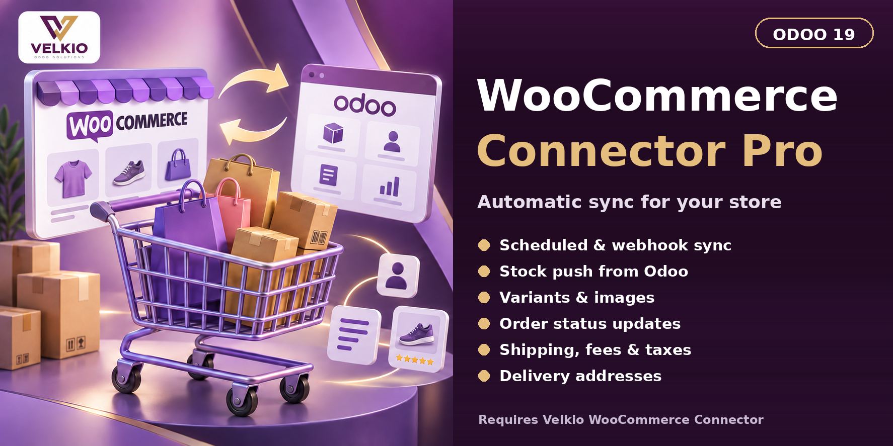

<section class="oe_container" style="box-sizing:border-box;display:block;max-width:1320px;width:100%;margin:0 auto;line-height:1.6;font-family:Arial,Helvetica,sans-serif;color:#282532;background-color:#FFFFFF;">
<div class="container py-3" style="box-sizing:border-box;width:100%;margin:0 auto;padding:0 16px;padding-top:16px;padding-bottom:16px;">
<div class="row align-items-center mb-3" style="box-sizing:border-box;display:flex;flex-wrap:wrap;margin-left:-10px;margin-right:-10px;align-items:center;margin-bottom:16px;"><div class="col-sm-4" style="box-sizing:border-box;flex:1 1 280px;min-width:0;max-width:100%;padding-left:10px;padding-right:10px;"></div><div class="col-sm-8 text-sm-right text-sm-end" style="box-sizing:border-box;flex:2 1 560px;min-width:0;max-width:100%;padding-left:10px;padding-right:10px;"><span class="badge p-2 m-1" style="box-sizing:border-box;display:inline-block;font-size:12px;font-weight:700;line-height:1.3;border-radius:5px;padding:8px;margin:4px;color:#714B67;background-color:#F6F1F6;">Odoo 19</span><span class="badge p-2 m-1" style="box-sizing:border-box;display:inline-block;font-size:12px;font-weight:700;line-height:1.3;border-radius:5px;padding:8px;margin:4px;color:#714B67;background-color:#F6F1F6;">Community &amp; Enterprise</span></div></div>
<section id="overview" class="p-3 p-md-4 my-3 rounded" style="box-sizing:border-box;padding:16px;margin-top:16px;margin-bottom:16px;border-radius:10px;background-color:#F6F1F6;">
<div class="text-center mb-4" style="box-sizing:border-box;text-align:center;margin-bottom:24px;"><p style="box-sizing:border-box;margin:0 0 16px;overflow-wrap:anywhere;font-size:12px;letter-spacing:2px;color:#9A7135;font-weight:700;">VELKIO ODOO SOLUTIONS</p><h1 style="box-sizing:border-box;margin:0 0 16px;line-height:1.15;font-size:42px;font-weight:800;color:#282532;">Velkio WooCommerce Connector Pro</h1><p style="box-sizing:border-box;margin:0 0 16px;overflow-wrap:anywhere;font-size:20px;line-height:1.5;color:#714B67;">Automatic sync for stock, variations, orders, shipping and taxes</p></div><p class="" style="box-sizing:border-box;margin:0 0 16px;overflow-wrap:anywhere;color:#625F6C;font-size:16px;line-height:1.8;">Connector Pro extends Velkio WooCommerce Connector with scheduled sync, webhooks, stock push, variations, shipping and fee lines, tax mapping and order status updates.</p><ul style="box-sizing:border-box;color:#514A59;font-size:16px;line-height:1.9;"><li style="box-sizing:border-box;">Odoo 19.0 with Sales and Inventory</li><li style="box-sizing:border-box;">Velkio WooCommerce Connector installed</li><li style="box-sizing:border-box;">A WooCommerce store with REST API credentials</li><li style="box-sizing:border-box;">A public https Odoo URL if you use webhooks</li></ul><div class="text-center" style="box-sizing:border-box;text-align:center;"><a href="#features" class="btn px-4 py-3 m-1" style="box-sizing:border-box;text-decoration:none;display:inline-block;text-align:center;line-height:1.5;padding-left:24px;padding-right:24px;padding-top:16px;padding-bottom:16px;margin:4px;background-color:#714B67;color:#FFFFFF;border:1px solid #714B67;font-size:15px;font-weight:700;border-radius:8px;">Explore capabilities</a><a href="#setup" class="btn px-4 py-3 m-1" style="box-sizing:border-box;text-decoration:none;display:inline-block;text-align:center;line-height:1.5;padding-left:24px;padding-right:24px;padding-top:16px;padding-bottom:16px;margin:4px;background-color:#FFFFFF;color:#714B67;border:1px solid #714B67;font-size:15px;font-weight:700;border-radius:8px;">Setup</a></div>
</section>
<div class="my-4" style="box-sizing:border-box;margin-top:24px;margin-bottom:24px;"></div>
<section id="features" class="p-3 p-md-4 my-3 rounded" style="box-sizing:border-box;padding:16px;margin-top:16px;margin-bottom:16px;border-radius:10px;background-color:#FFFFFF;">
<p class="mb-2" style="box-sizing:border-box;margin:0 0 16px;overflow-wrap:anywhere;margin-bottom:8px;color:#714B67;font-size:12px;font-weight:700;letter-spacing:2px;">CAPABILITIES</p>
<h2 class="mb-4" style="box-sizing:border-box;margin:0 0 16px;line-height:1.3;margin-bottom:24px;color:#282532;font-size:29px;font-weight:700;">What Connector Pro adds</h2><div class="row" style="box-sizing:border-box;display:flex;flex-wrap:wrap;margin-left:-10px;margin-right:-10px;">
<div class="col-md-6 col-lg-4 mb-3" style="box-sizing:border-box;flex:1 1 280px;min-width:0;max-width:100%;padding-left:10px;padding-right:10px;margin-bottom:16px;"><div class="h-100 p-4 border rounded" style="box-sizing:border-box;height:100%;padding:24px;border:1px solid #E6DFE8;border-radius:10px;border-color:#E6DFE8;background-color:#FFFFFF;">
<p style="box-sizing:border-box;margin:0 0 16px;overflow-wrap:anywhere;color:#9A7135;font-size:13px;font-weight:700;">01</p><h3 style="box-sizing:border-box;margin:0 0 16px;line-height:1.3;color:#282532;font-size:20px;font-weight:700;">Scheduled incremental sync</h3>
<p class="" style="box-sizing:border-box;margin:0 0 16px;overflow-wrap:anywhere;color:#625F6C;font-size:16px;line-height:1.8;">A scheduled action runs every 5 minutes and imports only records modified since the last run. Each store has its own interval, with a minimum of 5 minutes.</p></div></div>
<div class="col-md-6 col-lg-4 mb-3" style="box-sizing:border-box;flex:1 1 280px;min-width:0;max-width:100%;padding-left:10px;padding-right:10px;margin-bottom:16px;"><div class="h-100 p-4 border rounded" style="box-sizing:border-box;height:100%;padding:24px;border:1px solid #E6DFE8;border-radius:10px;border-color:#E6DFE8;background-color:#FFFFFF;">
<p style="box-sizing:border-box;margin:0 0 16px;overflow-wrap:anywhere;color:#9A7135;font-size:13px;font-weight:700;">02</p><h3 style="box-sizing:border-box;margin:0 0 16px;line-height:1.3;color:#282532;font-size:20px;font-weight:700;">Real-time webhooks</h3>
<p class="" style="box-sizing:border-box;margin:0 0 16px;overflow-wrap:anywhere;color:#625F6C;font-size:16px;line-height:1.8;">Order, product and customer created/updated events are accepted from WooCommerce and verified with HMAC-SHA256. Webhooks require an https web.base.url.</p></div></div>
<div class="col-md-6 col-lg-4 mb-3" style="box-sizing:border-box;flex:1 1 280px;min-width:0;max-width:100%;padding-left:10px;padding-right:10px;margin-bottom:16px;"><div class="h-100 p-4 border rounded" style="box-sizing:border-box;height:100%;padding:24px;border:1px solid #E6DFE8;border-radius:10px;border-color:#E6DFE8;background-color:#FFFFFF;">
<p style="box-sizing:border-box;margin:0 0 16px;overflow-wrap:anywhere;color:#9A7135;font-size:13px;font-weight:700;">03</p><h3 style="box-sizing:border-box;margin:0 0 16px;line-height:1.3;color:#282532;font-size:20px;font-weight:700;">Stock push from Odoo</h3>
<p class="" style="box-sizing:border-box;margin:0 0 16px;overflow-wrap:anywhere;color:#625F6C;font-size:16px;line-height:1.8;">Sends free quantity per warehouse to mapped WooCommerce products, in batches, and only when the quantity changed.</p></div></div>
<div class="col-md-6 col-lg-4 mb-3" style="box-sizing:border-box;flex:1 1 280px;min-width:0;max-width:100%;padding-left:10px;padding-right:10px;margin-bottom:16px;"><div class="h-100 p-4 border rounded" style="box-sizing:border-box;height:100%;padding:24px;border:1px solid #E6DFE8;border-radius:10px;border-color:#E6DFE8;background-color:#FFFFFF;">
<p style="box-sizing:border-box;margin:0 0 16px;overflow-wrap:anywhere;color:#9A7135;font-size:13px;font-weight:700;">04</p><h3 style="box-sizing:border-box;margin:0 0 16px;line-height:1.3;color:#282532;font-size:20px;font-weight:700;">Variations and main image</h3>
<p class="" style="box-sizing:border-box;margin:0 0 16px;overflow-wrap:anywhere;color:#625F6C;font-size:16px;line-height:1.8;">Variations are matched by attribute. A per-variant price is applied only when a single attribute varies. The main product image is imported.</p></div></div>
<div class="col-md-6 col-lg-4 mb-3" style="box-sizing:border-box;flex:1 1 280px;min-width:0;max-width:100%;padding-left:10px;padding-right:10px;margin-bottom:16px;"><div class="h-100 p-4 border rounded" style="box-sizing:border-box;height:100%;padding:24px;border:1px solid #E6DFE8;border-radius:10px;border-color:#E6DFE8;background-color:#FFFFFF;">
<p style="box-sizing:border-box;margin:0 0 16px;overflow-wrap:anywhere;color:#9A7135;font-size:13px;font-weight:700;">05</p><h3 style="box-sizing:border-box;margin:0 0 16px;line-height:1.3;color:#282532;font-size:20px;font-weight:700;">Shipping, fees and notes</h3>
<p class="" style="box-sizing:border-box;margin:0 0 16px;overflow-wrap:anywhere;color:#625F6C;font-size:16px;line-height:1.8;">Shipping and fee lines become order lines. Coupons, payment method and the customer note are added to the order chatter.</p></div></div>
<div class="col-md-6 col-lg-4 mb-3" style="box-sizing:border-box;flex:1 1 280px;min-width:0;max-width:100%;padding-left:10px;padding-right:10px;margin-bottom:16px;"><div class="h-100 p-4 border rounded" style="box-sizing:border-box;height:100%;padding:24px;border:1px solid #E6DFE8;border-radius:10px;border-color:#E6DFE8;background-color:#FFFFFF;">
<p style="box-sizing:border-box;margin:0 0 16px;overflow-wrap:anywhere;color:#9A7135;font-size:13px;font-weight:700;">06</p><h3 style="box-sizing:border-box;margin:0 0 16px;line-height:1.3;color:#282532;font-size:20px;font-weight:700;">Tax handling</h3>
<p class="" style="box-sizing:border-box;margin:0 0 16px;overflow-wrap:anywhere;color:#625F6C;font-size:16px;line-height:1.8;">Choose Odoo taxes, no taxes, or mapped taxes, and use the Import Tax Rates action to build the mapping.</p></div></div>
<div class="col-md-6 col-lg-4 mb-3" style="box-sizing:border-box;flex:1 1 280px;min-width:0;max-width:100%;padding-left:10px;padding-right:10px;margin-bottom:16px;"><div class="h-100 p-4 border rounded" style="box-sizing:border-box;height:100%;padding:24px;border:1px solid #E6DFE8;border-radius:10px;border-color:#E6DFE8;background-color:#FFFFFF;">
<p style="box-sizing:border-box;margin:0 0 16px;overflow-wrap:anywhere;color:#9A7135;font-size:13px;font-weight:700;">07</p><h3 style="box-sizing:border-box;margin:0 0 16px;line-height:1.3;color:#282532;font-size:20px;font-weight:700;">Delivery addresses</h3>
<p class="" style="box-sizing:border-box;margin:0 0 16px;overflow-wrap:anywhere;color:#625F6C;font-size:16px;line-height:1.8;">The WooCommerce shipping address is created as a child contact of the customer.</p></div></div>
<div class="col-md-6 col-lg-4 mb-3" style="box-sizing:border-box;flex:1 1 280px;min-width:0;max-width:100%;padding-left:10px;padding-right:10px;margin-bottom:16px;"><div class="h-100 p-4 border rounded" style="box-sizing:border-box;height:100%;padding:24px;border:1px solid #E6DFE8;border-radius:10px;border-color:#E6DFE8;background-color:#FFFFFF;">
<p style="box-sizing:border-box;margin:0 0 16px;overflow-wrap:anywhere;color:#9A7135;font-size:13px;font-weight:700;">08</p><h3 style="box-sizing:border-box;margin:0 0 16px;line-height:1.3;color:#282532;font-size:20px;font-weight:700;">Order status updates</h3>
<p class="" style="box-sizing:border-box;margin:0 0 16px;overflow-wrap:anywhere;color:#625F6C;font-size:16px;line-height:1.8;">Confirming an order sets it to processing, a fully delivered order to completed, and a cancelled order to cancelled in WooCommerce. A WooCommerce cancel, refund or failed status cancels the Odoo order.</p></div></div>
<div class="col-md-6 col-lg-4 mb-3" style="box-sizing:border-box;flex:1 1 280px;min-width:0;max-width:100%;padding-left:10px;padding-right:10px;margin-bottom:16px;"><div class="h-100 p-4 border rounded" style="box-sizing:border-box;height:100%;padding:24px;border:1px solid #E6DFE8;border-radius:10px;border-color:#E6DFE8;background-color:#FFFFFF;">
<p style="box-sizing:border-box;margin:0 0 16px;overflow-wrap:anywhere;color:#9A7135;font-size:13px;font-weight:700;">09</p><h3 style="box-sizing:border-box;margin:0 0 16px;line-height:1.3;color:#282532;font-size:20px;font-weight:700;">Order status filter</h3>
<p class="" style="box-sizing:border-box;margin:0 0 16px;overflow-wrap:anywhere;color:#625F6C;font-size:16px;line-height:1.8;">Choose which WooCommerce statuses are imported. The default is processing, on-hold and completed.</p></div></div>
</div>
</section>
<div class="row align-items-center p-3 p-md-4 my-4 rounded" style="box-sizing:border-box;display:flex;flex-wrap:wrap;margin-left:-10px;margin-right:-10px;align-items:center;padding:16px;margin-top:24px;margin-bottom:24px;border-radius:10px;background-color:#302236;"><div class="col-lg-8" style="box-sizing:border-box;flex:2 1 560px;min-width:0;max-width:100%;padding-left:10px;padding-right:10px;"><h3 style="box-sizing:border-box;margin:0 0 16px;line-height:1.3;color:#FFFFFF;font-size:25px;">Start with the base connector</h3><p class="mb-2" style="box-sizing:border-box;margin:0 0 16px;overflow-wrap:anywhere;margin-bottom:8px;color:#E9DFEC;font-size:16px;line-height:1.7;">Connector Pro adds options to your existing store connections, so connect your store first.</p></div><div class="col-lg-4 text-lg-right text-lg-end" style="box-sizing:border-box;flex:1 1 280px;min-width:0;max-width:100%;padding-left:10px;padding-right:10px;"><a href="#setup" class="btn px-4 py-3 m-1" style="box-sizing:border-box;text-decoration:none;display:inline-block;text-align:center;line-height:1.5;padding-left:24px;padding-right:24px;padding-top:16px;padding-bottom:16px;margin:4px;background-color:#FFFFFF;color:#714B67;border:1px solid #714B67;font-size:15px;font-weight:700;border-radius:8px;">Read the setup guide</a></div></div>
<section id="setup" class="p-3 p-md-4 my-3 rounded" style="box-sizing:border-box;padding:16px;margin-top:16px;margin-bottom:16px;border-radius:10px;background-color:#F6F1F6;">
<p class="mb-2" style="box-sizing:border-box;margin:0 0 16px;overflow-wrap:anywhere;margin-bottom:8px;color:#714B67;font-size:12px;font-weight:700;letter-spacing:2px;">GETTING STARTED</p>
<h2 class="mb-4" style="box-sizing:border-box;margin:0 0 16px;line-height:1.3;margin-bottom:24px;color:#282532;font-size:29px;font-weight:700;">Six steps to automatic sync</h2><div class="row" style="box-sizing:border-box;display:flex;flex-wrap:wrap;margin-left:-10px;margin-right:-10px;">
<div class="col-md-6 mb-3" style="box-sizing:border-box;flex:1 1 420px;min-width:0;max-width:100%;padding-left:10px;padding-right:10px;margin-bottom:16px;"><div class="h-100 p-4 border rounded" style="box-sizing:border-box;height:100%;padding:24px;border:1px solid #E6DFE8;border-radius:10px;border-color:#E6DFE8;background-color:#FFFFFF;">
<p style="box-sizing:border-box;margin:0 0 16px;overflow-wrap:anywhere;color:#9A7135;font-size:13px;font-weight:700;">01</p><h3 style="box-sizing:border-box;margin:0 0 16px;line-height:1.3;color:#282532;font-size:20px;font-weight:700;">Install the base connector</h3>
<p class="" style="box-sizing:border-box;margin:0 0 16px;overflow-wrap:anywhere;color:#625F6C;font-size:16px;line-height:1.8;">Install Velkio WooCommerce Connector first and connect your store with WooCommerce REST API keys.</p></div></div>
<div class="col-md-6 mb-3" style="box-sizing:border-box;flex:1 1 420px;min-width:0;max-width:100%;padding-left:10px;padding-right:10px;margin-bottom:16px;"><div class="h-100 p-4 border rounded" style="box-sizing:border-box;height:100%;padding:24px;border:1px solid #E6DFE8;border-radius:10px;border-color:#E6DFE8;background-color:#FFFFFF;">
<p style="box-sizing:border-box;margin:0 0 16px;overflow-wrap:anywhere;color:#9A7135;font-size:13px;font-weight:700;">02</p><h3 style="box-sizing:border-box;margin:0 0 16px;line-height:1.3;color:#282532;font-size:20px;font-weight:700;">Install Connector Pro</h3>
<p class="" style="box-sizing:border-box;margin:0 0 16px;overflow-wrap:anywhere;color:#625F6C;font-size:16px;line-height:1.8;">Install this module. It adds its options to your existing store connections.</p></div></div>
<div class="col-md-6 mb-3" style="box-sizing:border-box;flex:1 1 420px;min-width:0;max-width:100%;padding-left:10px;padding-right:10px;margin-bottom:16px;"><div class="h-100 p-4 border rounded" style="box-sizing:border-box;height:100%;padding:24px;border:1px solid #E6DFE8;border-radius:10px;border-color:#E6DFE8;background-color:#FFFFFF;">
<p style="box-sizing:border-box;margin:0 0 16px;overflow-wrap:anywhere;color:#9A7135;font-size:13px;font-weight:700;">03</p><h3 style="box-sizing:border-box;margin:0 0 16px;line-height:1.3;color:#282532;font-size:20px;font-weight:700;">Choose what to sync</h3>
<p class="" style="box-sizing:border-box;margin:0 0 16px;overflow-wrap:anywhere;color:#625F6C;font-size:16px;line-height:1.8;">Open the store connection and select products, customers, orders and stock push.</p></div></div>
<div class="col-md-6 mb-3" style="box-sizing:border-box;flex:1 1 420px;min-width:0;max-width:100%;padding-left:10px;padding-right:10px;margin-bottom:16px;"><div class="h-100 p-4 border rounded" style="box-sizing:border-box;height:100%;padding:24px;border:1px solid #E6DFE8;border-radius:10px;border-color:#E6DFE8;background-color:#FFFFFF;">
<p style="box-sizing:border-box;margin:0 0 16px;overflow-wrap:anywhere;color:#9A7135;font-size:13px;font-weight:700;">04</p><h3 style="box-sizing:border-box;margin:0 0 16px;line-height:1.3;color:#282532;font-size:20px;font-weight:700;">Map taxes</h3>
<p class="" style="box-sizing:border-box;margin:0 0 16px;overflow-wrap:anywhere;color:#625F6C;font-size:16px;line-height:1.8;">Pick the tax mode and, for mapped taxes, run Import Tax Rates and map each rate to an Odoo tax.</p></div></div>
<div class="col-md-6 mb-3" style="box-sizing:border-box;flex:1 1 420px;min-width:0;max-width:100%;padding-left:10px;padding-right:10px;margin-bottom:16px;"><div class="h-100 p-4 border rounded" style="box-sizing:border-box;height:100%;padding:24px;border:1px solid #E6DFE8;border-radius:10px;border-color:#E6DFE8;background-color:#FFFFFF;">
<p style="box-sizing:border-box;margin:0 0 16px;overflow-wrap:anywhere;color:#9A7135;font-size:13px;font-weight:700;">05</p><h3 style="box-sizing:border-box;margin:0 0 16px;line-height:1.3;color:#282532;font-size:20px;font-weight:700;">Enable automation</h3>
<p class="" style="box-sizing:border-box;margin:0 0 16px;overflow-wrap:anywhere;color:#625F6C;font-size:16px;line-height:1.8;">Turn on Automatic Sync and set the interval. For webhooks, make sure web.base.url is an https address and copy the webhook address into WooCommerce.</p></div></div>
<div class="col-md-6 mb-3" style="box-sizing:border-box;flex:1 1 420px;min-width:0;max-width:100%;padding-left:10px;padding-right:10px;margin-bottom:16px;"><div class="h-100 p-4 border rounded" style="box-sizing:border-box;height:100%;padding:24px;border:1px solid #E6DFE8;border-radius:10px;border-color:#E6DFE8;background-color:#FFFFFF;">
<p style="box-sizing:border-box;margin:0 0 16px;overflow-wrap:anywhere;color:#9A7135;font-size:13px;font-weight:700;">06</p><h3 style="box-sizing:border-box;margin:0 0 16px;line-height:1.3;color:#282532;font-size:20px;font-weight:700;">Check the first run</h3>
<p class="" style="box-sizing:border-box;margin:0 0 16px;overflow-wrap:anywhere;color:#625F6C;font-size:16px;line-height:1.8;">Run a small sync, then review the sync log and the created orders.</p></div></div>
</div>
</section>
<section id="scope" class="p-3 p-md-4 my-3 rounded" style="box-sizing:border-box;padding:16px;margin-top:16px;margin-bottom:16px;border-radius:10px;background-color:#F6F1F6;">
<p class="mb-2" style="box-sizing:border-box;margin:0 0 16px;overflow-wrap:anywhere;margin-bottom:8px;color:#714B67;font-size:12px;font-weight:700;letter-spacing:2px;">SCOPE</p>
<h2 class="mb-4" style="box-sizing:border-box;margin:0 0 16px;line-height:1.3;margin-bottom:24px;color:#282532;font-size:29px;font-weight:700;">What is not included</h2><div class="row" style="box-sizing:border-box;display:flex;flex-wrap:wrap;margin-left:-10px;margin-right:-10px;">
<div class="col-md-6 col-lg-4 mb-3" style="box-sizing:border-box;flex:1 1 280px;min-width:0;max-width:100%;padding-left:10px;padding-right:10px;margin-bottom:16px;"><div class="h-100 p-4 border rounded" style="box-sizing:border-box;height:100%;padding:24px;border:1px solid #E6DFE8;border-radius:10px;border-color:#E6DFE8;background-color:#FFFFFF;">
<p style="box-sizing:border-box;margin:0 0 16px;overflow-wrap:anywhere;color:#9A7135;font-size:13px;font-weight:700;">01</p><h3 style="box-sizing:border-box;margin:0 0 16px;line-height:1.3;color:#282532;font-size:20px;font-weight:700;">Refund credit notes</h3>
<p class="" style="box-sizing:border-box;margin:0 0 16px;overflow-wrap:anywhere;color:#625F6C;font-size:16px;line-height:1.8;">Refunds in WooCommerce cancel the Odoo order but do not create credit notes.</p></div></div>
<div class="col-md-6 col-lg-4 mb-3" style="box-sizing:border-box;flex:1 1 280px;min-width:0;max-width:100%;padding-left:10px;padding-right:10px;margin-bottom:16px;"><div class="h-100 p-4 border rounded" style="box-sizing:border-box;height:100%;padding:24px;border:1px solid #E6DFE8;border-radius:10px;border-color:#E6DFE8;background-color:#FFFFFF;">
<p style="box-sizing:border-box;margin:0 0 16px;overflow-wrap:anywhere;color:#9A7135;font-size:13px;font-weight:700;">02</p><h3 style="box-sizing:border-box;margin:0 0 16px;line-height:1.3;color:#282532;font-size:20px;font-weight:700;">Image export</h3>
<p class="" style="box-sizing:border-box;margin:0 0 16px;overflow-wrap:anywhere;color:#625F6C;font-size:16px;line-height:1.8;">Only the main product image is imported. Images are not sent to WooCommerce.</p></div></div>
<div class="col-md-6 col-lg-4 mb-3" style="box-sizing:border-box;flex:1 1 280px;min-width:0;max-width:100%;padding-left:10px;padding-right:10px;margin-bottom:16px;"><div class="h-100 p-4 border rounded" style="box-sizing:border-box;height:100%;padding:24px;border:1px solid #E6DFE8;border-radius:10px;border-color:#E6DFE8;background-color:#FFFFFF;">
<p style="box-sizing:border-box;margin:0 0 16px;overflow-wrap:anywhere;color:#9A7135;font-size:13px;font-weight:700;">03</p><h3 style="box-sizing:border-box;margin:0 0 16px;line-height:1.3;color:#282532;font-size:20px;font-weight:700;">Multi-attribute variant pricing</h3>
<p class="" style="box-sizing:border-box;margin:0 0 16px;overflow-wrap:anywhere;color:#625F6C;font-size:16px;line-height:1.8;">Per-variant prices are applied only when exactly one attribute varies.</p></div></div>
</div>
</section>
<section id="faq" class="p-3 p-md-4 my-3 rounded" style="box-sizing:border-box;padding:16px;margin-top:16px;margin-bottom:16px;border-radius:10px;background-color:#FFFFFF;">
<p class="mb-2" style="box-sizing:border-box;margin:0 0 16px;overflow-wrap:anywhere;margin-bottom:8px;color:#714B67;font-size:12px;font-weight:700;letter-spacing:2px;">QUESTIONS</p>
<h2 class="mb-4" style="box-sizing:border-box;margin:0 0 16px;line-height:1.3;margin-bottom:24px;color:#282532;font-size:29px;font-weight:700;">Check before you install</h2><div class="row" style="box-sizing:border-box;display:flex;flex-wrap:wrap;margin-left:-10px;margin-right:-10px;">
<div class="col-md-6 mb-3" style="box-sizing:border-box;flex:1 1 420px;min-width:0;max-width:100%;padding-left:10px;padding-right:10px;margin-bottom:16px;"><div class="h-100 p-4 border rounded" style="box-sizing:border-box;height:100%;padding:24px;border:1px solid #E6DFE8;border-radius:10px;border-color:#E6DFE8;background-color:#FFFFFF;">
<p style="box-sizing:border-box;margin:0 0 16px;overflow-wrap:anywhere;color:#9A7135;font-size:13px;font-weight:700;">01</p><h3 style="box-sizing:border-box;margin:0 0 16px;line-height:1.3;color:#282532;font-size:20px;font-weight:700;">Does this work without the base connector?</h3>
<p class="" style="box-sizing:border-box;margin:0 0 16px;overflow-wrap:anywhere;color:#625F6C;font-size:16px;line-height:1.8;">No. Velkio WooCommerce Connector and Odoo Sales and Inventory (sale_stock) are required dependencies.</p></div></div>
<div class="col-md-6 mb-3" style="box-sizing:border-box;flex:1 1 420px;min-width:0;max-width:100%;padding-left:10px;padding-right:10px;margin-bottom:16px;"><div class="h-100 p-4 border rounded" style="box-sizing:border-box;height:100%;padding:24px;border:1px solid #E6DFE8;border-radius:10px;border-color:#E6DFE8;background-color:#FFFFFF;">
<p style="box-sizing:border-box;margin:0 0 16px;overflow-wrap:anywhere;color:#9A7135;font-size:13px;font-weight:700;">02</p><h3 style="box-sizing:border-box;margin:0 0 16px;line-height:1.3;color:#282532;font-size:20px;font-weight:700;">Which Odoo version is supported?</h3>
<p class="" style="box-sizing:border-box;margin:0 0 16px;overflow-wrap:anywhere;color:#625F6C;font-size:16px;line-height:1.8;">Odoo 19.0, Community and Enterprise.</p></div></div>
<div class="col-md-6 mb-3" style="box-sizing:border-box;flex:1 1 420px;min-width:0;max-width:100%;padding-left:10px;padding-right:10px;margin-bottom:16px;"><div class="h-100 p-4 border rounded" style="box-sizing:border-box;height:100%;padding:24px;border:1px solid #E6DFE8;border-radius:10px;border-color:#E6DFE8;background-color:#FFFFFF;">
<p style="box-sizing:border-box;margin:0 0 16px;overflow-wrap:anywhere;color:#9A7135;font-size:13px;font-weight:700;">03</p><h3 style="box-sizing:border-box;margin:0 0 16px;line-height:1.3;color:#282532;font-size:20px;font-weight:700;">How often does automatic sync run?</h3>
<p class="" style="box-sizing:border-box;margin:0 0 16px;overflow-wrap:anywhere;color:#625F6C;font-size:16px;line-height:1.8;">A scheduled action runs every 5 minutes. Each store has its own interval, with a minimum of 5 minutes.</p></div></div>
<div class="col-md-6 mb-3" style="box-sizing:border-box;flex:1 1 420px;min-width:0;max-width:100%;padding-left:10px;padding-right:10px;margin-bottom:16px;"><div class="h-100 p-4 border rounded" style="box-sizing:border-box;height:100%;padding:24px;border:1px solid #E6DFE8;border-radius:10px;border-color:#E6DFE8;background-color:#FFFFFF;">
<p style="box-sizing:border-box;margin:0 0 16px;overflow-wrap:anywhere;color:#9A7135;font-size:13px;font-weight:700;">04</p><h3 style="box-sizing:border-box;margin:0 0 16px;line-height:1.3;color:#282532;font-size:20px;font-weight:700;">Do webhooks need anything special?</h3>
<p class="" style="box-sizing:border-box;margin:0 0 16px;overflow-wrap:anywhere;color:#625F6C;font-size:16px;line-height:1.8;">Yes. Your Odoo web.base.url must be an https address that WooCommerce can reach.</p></div></div>
</div>
</section>
<section id="support" class="p-3 p-md-4 my-3 rounded" style="box-sizing:border-box;padding:16px;margin-top:16px;margin-bottom:16px;border-radius:10px;background-color:#FFFFFF;">
<p class="mb-2" style="box-sizing:border-box;margin:0 0 16px;overflow-wrap:anywhere;margin-bottom:8px;color:#714B67;font-size:12px;font-weight:700;letter-spacing:2px;">VELKIO SUPPORT</p>
<h2 class="mb-4" style="box-sizing:border-box;margin:0 0 16px;line-height:1.3;margin-bottom:24px;color:#282532;font-size:29px;font-weight:700;">Get help</h2><p class="" style="box-sizing:border-box;margin:0 0 16px;overflow-wrap:anywhere;color:#625F6C;font-size:16px;line-height:1.8;">Include your Odoo and module versions. Remove passwords and API keys from shared screenshots.</p><div class="row align-items-center p-3 p-md-4 my-4 rounded" style="box-sizing:border-box;display:flex;flex-wrap:wrap;margin-left:-10px;margin-right:-10px;align-items:center;padding:16px;margin-top:24px;margin-bottom:24px;border-radius:10px;background-color:#302236;"><div class="col-lg-8" style="box-sizing:border-box;flex:2 1 560px;min-width:0;max-width:100%;padding-left:10px;padding-right:10px;"><h3 style="box-sizing:border-box;margin:0 0 16px;line-height:1.3;color:#FFFFFF;font-size:25px;">Need help?</h3><p class="mb-2" style="box-sizing:border-box;margin:0 0 16px;overflow-wrap:anywhere;margin-bottom:8px;color:#E9DFEC;font-size:16px;line-height:1.7;">Email us with the action, the exact error and the relevant log lines.</p></div><div class="col-lg-4 text-lg-right text-lg-end" style="box-sizing:border-box;flex:1 1 280px;min-width:0;max-width:100%;padding-left:10px;padding-right:10px;"><a href="mailto:velkio.odoosolution@gmail.com" class="btn px-4 py-3 m-1" style="box-sizing:border-box;text-decoration:none;display:inline-block;text-align:center;line-height:1.5;padding-left:24px;padding-right:24px;padding-top:16px;padding-bottom:16px;margin:4px;background-color:#FFFFFF;color:#714B67;border:1px solid #714B67;font-size:15px;font-weight:700;border-radius:8px;">Email Velkio support</a></div></div><p class="" style="box-sizing:border-box;margin:0 0 16px;overflow-wrap:anywhere;color:#625F6C;font-size:16px;line-height:1.8;">velkio.odoosolution@gmail.com</p><p class="small" style="box-sizing:border-box;margin:0 0 16px;overflow-wrap:anywhere;font-size:16px;color:#625F6C;line-height:1.8;">Independent integration by Velkio Odoo Solutions. WooCommerce is a trademark of its owners.</p>
</section>
</div>
</section>
